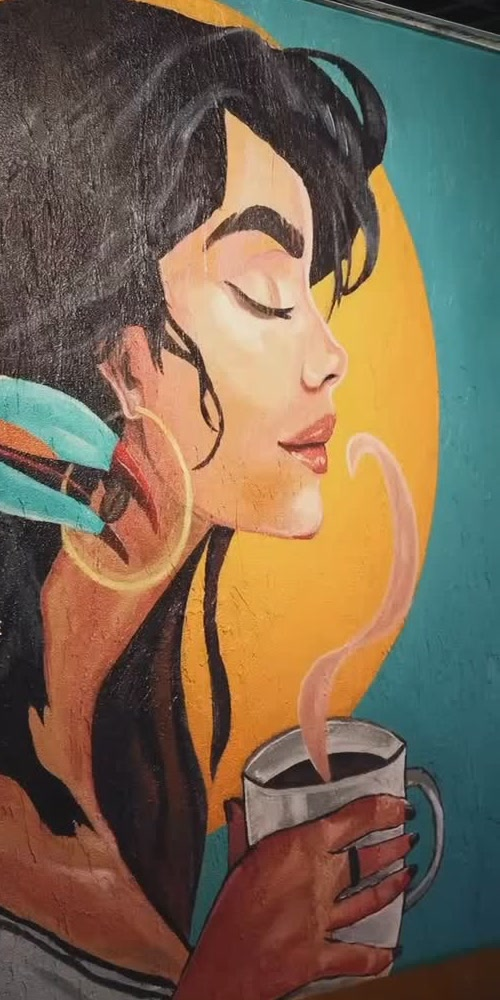
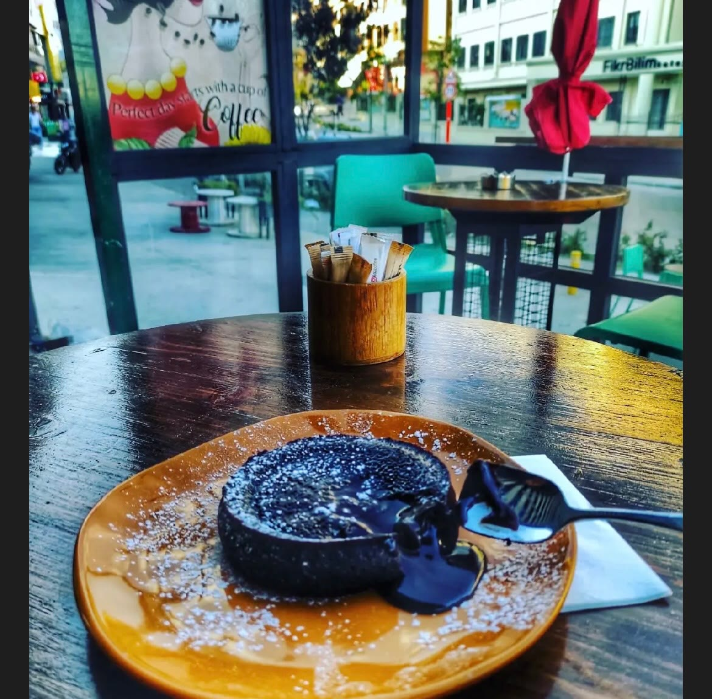
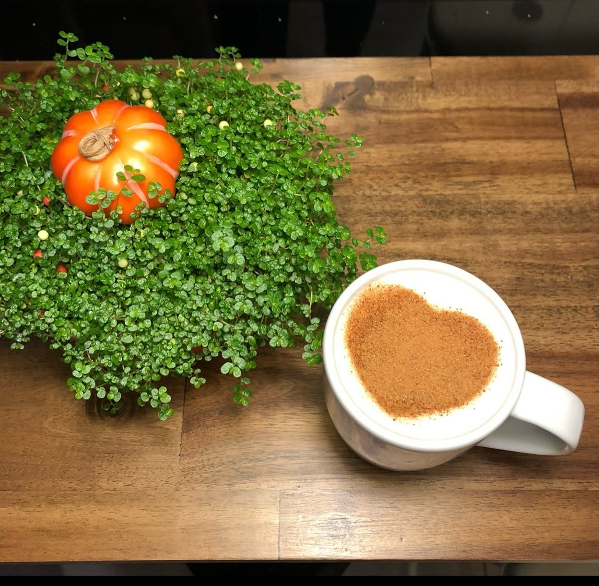
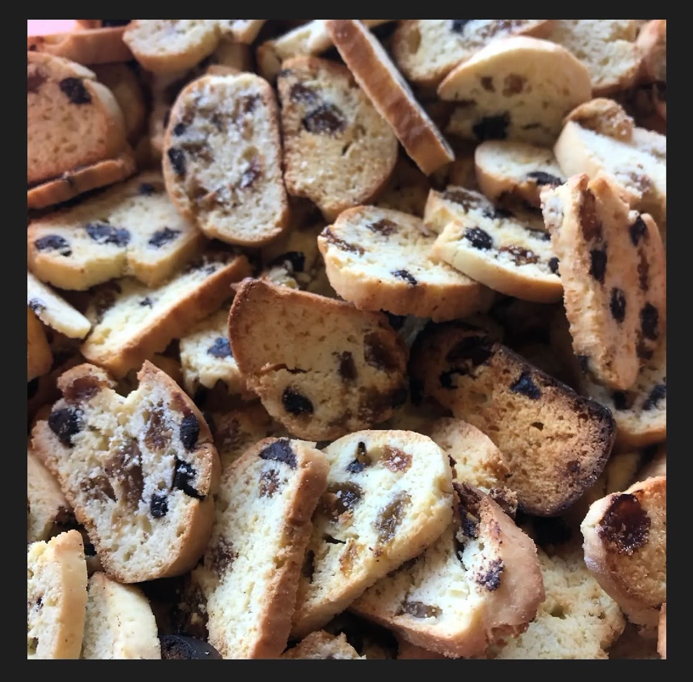
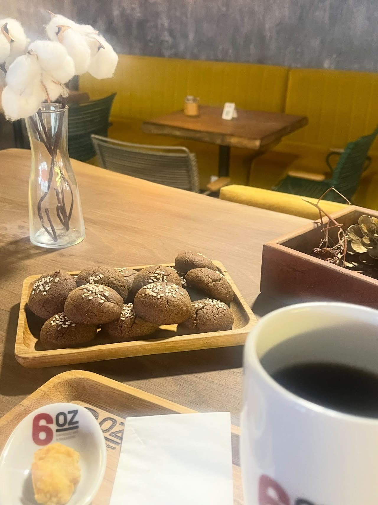
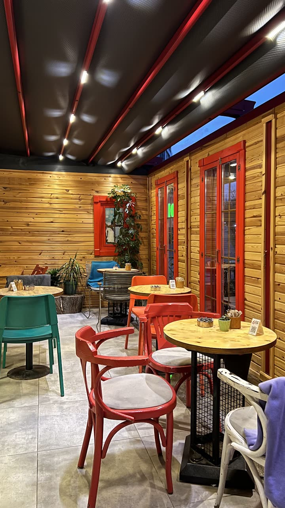
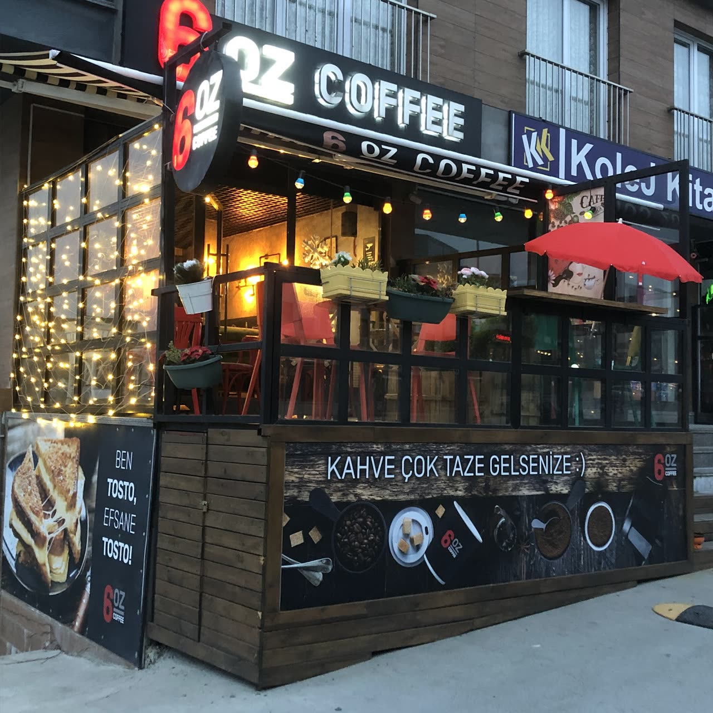

Şans kurabiyeleri
On yıldır her yıl sonunda raflara şans kurabiyelerimiz çıkar. Bir dilek tutup şansınızı denersiniz. Çabuk tükenir.
Derya ve Fatih’in Beylikdüzü’ndeki kahve ve pasta evi. Kolejler bölgesinde, Çalışlar Caddesi’nde küçük, sıcak bir köşe.


Kahve çekirdeklerimizi kendimiz kavuruyoruz. Müşterilerimiz en çok fincanların büyüklüğünü ve her gelişte değişmeyen tadı anlatıyor.

Hepsi bizim mutfağımızdan, ev yapımı. Vitrin güne göre değişir; bugün ne olduğunu WhatsApp’tan sorabilirsiniz.


Bir de çikolatalı vişneli pasta, fıstıklı Cedric, kruvasan, biscotti ve susamlı kurabiye var.
“Dolu dolu 10. senemize girdik.”
6OZ’u Ocak 2017’de Çalışlar Caddesi’nde açtık. O günden beri kahvemizi kendimiz kavuruyor, pastalarımızı kendi mutfağımızda yapıyoruz.
Bu yıllarda müdavimlerimiz, çarşamba kitap günlerimiz ve kapımızdaki dört ayaklı dostlarımızla büyüdük.
On yıldır her yıl sonunda raflara şans kurabiyelerimiz çıkar. Bir dilek tutup şansınızı denersiniz. Çabuk tükenir.
Çarşambaları kitabınızı alıp gelin. O gün burada sadece kitap okunur.
Mahallenin köpekleri bizim de dostumuz. Kapıda mamaları ve suları hep hazır, içeride kanepede uyuyakaldıkları da olur.







Google’da 4,7 puan, 343 yorum
Kahveleri çok iyi ama tatlıları olay. Sakin ve huzurlu bir yer. Bulunduğu konum merkezi, otopark sorunu yok.
San Sebastian için mutlaka gelmelisiniz. Kahveler de çok başarılı; her geldiğimde aynı tadı yaşamak gerçekten çok güzel.
Kahvelerin porsiyonları tecrübe ettiğim her kahveciden daha büyük ve tatmin edici. Flat white tercih ettim, gayet lezzetliydi.
Tatlıları ve kahveleri efsane! Özellikle San Sebastian’ı aşırı beğendim, uzun zamandır bu kadar iyisini yememiştim. Kafe sahipleri Derya Hanım ve Fatih Bey çok güler yüzlü; çok samimi, sıcak bir yer olmuş.
Yaklaşık dört senedir her zaman gittiğim bir yer. Kaliteden hiçbir zaman ödün vermiyorlar. Ders çalışmaya çok müsait, çok sıcak bir atmosferi var. Aynı zamanda hayvan dostu bir mekân.
İçeri girdiğiniz andan itibaren o samimiyeti, içtenliği hissediyorsunuz. Yaptıkları her ürün ev yapımı ve çok lezzetli.
Enfes lezzetleri, mis kokulu gerçek kahve çeşitleri, güler yüzlü ve misafirperver çalışanları, sıcak ve samimi atmosferiyle kesinlikle deneyimlenmesi gereken bir mekân.
Hayatımda yediğim en güzel San Sebastian’dı. Americanoları da gerçekten harikaydı; kahve oranı yüksek ama asla acı değil!
Terasımız var, paket servis de yapıyoruz.
